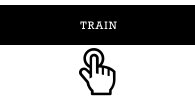

Step 5

Repeat until you reach the right end of the slider.
Step 6

Click “Capture training image” multiple times.
Step 7
Click “Train” once.
This is a hands-on project where you can train your own Neural Network starting from a blank state, to get a brief insight into the steps involved. In the previous project on opacity, we looked at classification. Here we will look at an example of regression. Regression is where the output is on a scale or a dial. For example, instead of giving an output that someone is “happy” or “sad” (which is classification), regression gives an output of how happy or sad someone is.
In the demonstration below, you can control the movement of a circle with your body. You will go through the following main steps: (1) Collecting training data, (2) training the model, and (3) prediction or making an inference. The slider can be used to move the circle from left to right. Our aim is to replace the slider and control the movement using our own body. For this project, the movement is restricted from the left to the right. In the steps below, I mention moving your hand left to right, but you can use any other part of your body such as legs, head movement, etc. You can also use another object in your hand, as long as it is a progressive motion.
Move slider to the left end. Place your hand over the yellow spot.
Click “Capture training image” multiple times.
Move slider bit to the right. Place your hand over the yellow spot.
Click “Capture training image” multiple times.
Repeat until you reach the right end of the slider.
Click “Capture training image” multiple times.
Click “Train” once.
We have often encountered regression problems where machine learning is used - such as in forecasting or predictions. Weather forecasting often uses this method. Based on data, weather is predicted. It does not just say that the weather will be hot or cold, but rather how hot or how cold and give the temperature value on a scale. For a human to crunch through the vast amount of data and predict the weather for every location on the planet, everyday would be nearly impossible. This is a situation where machine learning is useful to use.